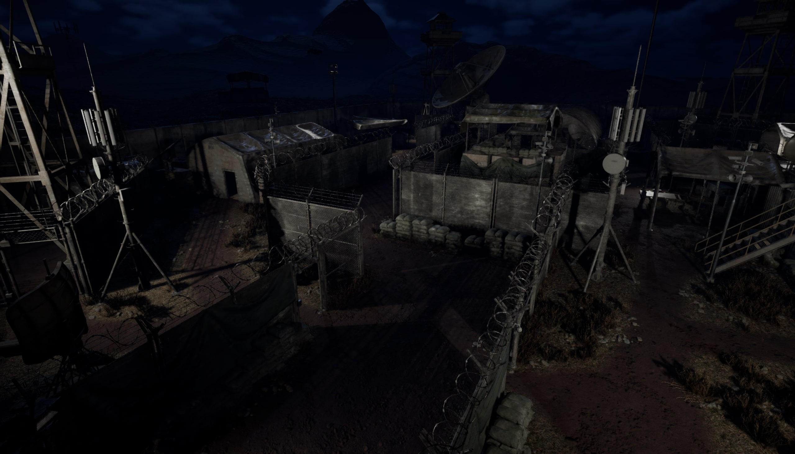

Gameplay Design
Shaped combat decisions around movement, aim, and readable enemy pressure.

Fast combat designed around readable pressure and confident improvisation.
We wanted players to feel sharp, mobile, and capable of making a plan in the middle of a fight. The fantasy was not power for its own sake; it was the satisfaction of reading a space quickly and turning a small advantage into momentum.

Early encounters felt noisy. Sightlines overlapped, pressure arrived from everywhere, and success could feel accidental. The design problem was to create urgency without sacrificing understanding.
Shaped combat decisions around movement, aim, and readable enemy pressure.
Built arena routes that gave players options without losing orientation.
Tuned encounter intensity so risk and reward stayed visible.
Used repeated sessions to separate real friction from personal preference.
Captured encounter intent so iteration stayed focused.
Prioritized the changes that most improved the moment-to-moment feel.
Click a stage to see the design question behind the encounter rhythm.
Select a stage to reveal the design insight.
WireframeFinal

Adding pressure everywhere made the fight feel flat. We reduced the number of simultaneous threats and gave each encounter a clearer rhythm.
“I knew where to go, but I did not know what mattered.”
We reduced feature breadth to protect the core combat loop, prioritized the arenas that taught the clearest lessons, and treated communication as part of the design work.
Lesson 01Clarity is a form of excitement.
Lesson 02Players find the edge cases first.
Lesson 03Iteration beats adding content.
I would keep the emphasis on readable movement and focused encounters. I would improve the onboarding and make the first arena teach the combat language with less noise.
Back to all projects →Get familiar with the controls and basic mechanics. Face off against simple AI in a small arena.
Navigate a city map with multiple routes and verticality. Enemies are smarter and use cover.
Battle in a dark, atmospheric map with limited visibility. Use stealth and night vision to your advantage.